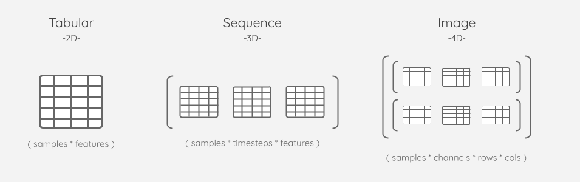
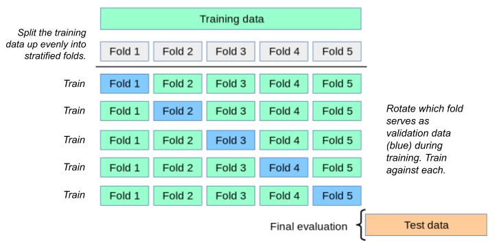
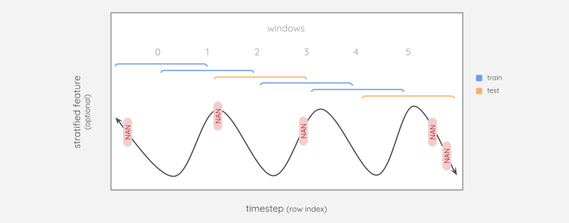

Low-Level API [under construction for v7.0.0]

Argument |
Type |
Default |
Description |
|---|---|---|---|
item |
type |
None |
text |
item |
type |
None |
text |
item |
type |
None |
text |
item |
type |
None |
text |
item |
type |
None |
text |
Object-Relational Model (ORM)
The Low-Level API is an object-relational model for machine learning. Each class in the ORM maps to a table in a SQLite database that serves as a machine learning metastore.
The real power lies in the relationships between these objects (e.g. Label→Splitset←Feature and Queue→Job→Predictor→Prediction), which enable us to construct rule-base protocols for various types of data and analysis.
Goobye, X_train, y_test. Hello, object-oriented machine learning.
1. Dataset
1a. Overview
The Dataset class provides the following subclasses for working with different types of data:
Subclass |
Dimensionality |
Supported Formats |
Format (if ingested) |
|---|---|---|---|
Tabular |
2D |
Files (Parquet, CSV, TSV, Parquet) / Pandas DataFrame (in-memory) |
Parquet |
Sequence |
3D |
NumPy (in-memory ndarray, npy file) |
npy |
Image |
4D |
NumPy (in-memory ndarray, npy file) / Pillow-supported formats |
npy |
The names are merely suggestive, as the primary purpose of these subclasses is to provide a way to register data of a known dimension. For example, a practitioner could ingest many uni-channel/ grayscale images as a 3D Sequence Dataset instead of a multi-channel 4D Image Dataset.
Why not 2D NumPy? The
Dataset.Tabularclass is intended for strict, column-specific dtypes and Parquet persistence upon ingestion. In practice, this conflicted too often with NumPy’s array-wide dtyping. We use the best tools for the job (df/pq for 2D) and (array/npy for ND).
1b. Registration
Most of the Dataset registration methods share these arguments:
Argument |
Description |
|---|---|
ingest |
Determines if raw data is either stored directly inside the metastore or remains on disk to be accessed via path/url. In-memory data like DataFrames and ndarrays must be ingested. Whereas file-based data like Parquet, NPY, Image folders/urls may remain remote. Regardless of whether or not the raw data is ingested, metadata is always derived from it by parsing: 2D via DataFrame and N-D via ndarray. |
rename_columns |
Useful for assigning column names to arrays or delimited files that would otherwise be unnamed. |
retype |
Change the dtype of data using np.types. All Dataset subclasses support mass typing via |
description |
What information does this dataset contain? What is unique about this dataset/ version – did you edit the raw data, add rows, or change column names/ dtypes? |
name |
Triggers dataset versioning. Datasets that share a name will be assigned an auto-incrementing |
Ingestion provides the following benefits, especially for entry-level users:
Persist in-memory datasets (Pandas DataFrames, NumPy ndarrays).
Keeps data coupled with the experiment in the portable SQLite file.
Provides a more immutable and out-of-the-way storage location in comparison to a laptop file system.
Encourages preserving tabular dtypes with the ecosystem-friendly Parquet format.
Why would I avoid ingestion?
Happy with where the original data lives: e.g. S3 bucket.
Don’t want to duplicate the data.
sha256? – It’s the one-way hash algorithm that GitHub aspires to upgrade to. AIQC runs it on compressed data because it’s easier and probably less-error prone than intercepting the bytes of the fastparquet intermediary tables before appending the Parquet magic bytes.
Is SQLite a legitimate datastore? – In many cases, SQLite queries are faster than accessing data via a filesystem. It’s a stable, 22 year-old technology that serves as the default database for iOS e.g. Apple Photos. AIQC uses it store raw data in byte format as a BlobField. I’ve stored tens-of-thousands of files in it over several years and never experienced corruption. Keep in mind that AWS S3 is blob store, and the Microsoft equivalent service is literally called Azure Blob Storage. The max size of a BlobField is 2GB, so ~20GB after compression. Either way, the goal of machine learning isn’t to record the entire population within the weights of a neural network, it’s to find subsets that are representative of the broader population.
1bi. Dataset.Tabular
Here are some of the ways practitioners can use this 2D structure:
Multiple subjects (1 row per sample) |
* |
Multi-variate 1D (1 col per attribute) |
Single subject (1 row per timestamp) |
* |
Multi-variate 1D (1 col per attribute) |
Multiple subjects (1 row per timestamp) |
* |
Uni-variate 0D (1 col per sample) |
Tabular datasets may contain both features and labels
└── Dataset.Tabular.from_df()
dataset = Dataset.Tabular.from_df(
dataframe
, rename_columns
, retype
, description
, name
)
Argument |
Type |
Default |
Description |
|---|---|---|---|
df |
DataFrame |
Required |
pd.DataFrame with int-based single index. DataFrames are always ingested. |
rename_columns |
list[str] |
None |
See Registration |
retype |
np.type / dict(column:np.type) |
None |
See Registration |
description |
str |
None |
See Registration |
name |
str |
None |
See Registration |
└── Dataset.Tabular.from_path()
Dataset.Tabular.from_path(
file_path
, ingest
, rename_columns
, retype
, header
, description
, name
)
Argument |
Type |
Default |
Description |
|---|---|---|---|
file_path |
str |
Required |
Parsed based on how the file name ends (.parquet, .tsv, .csv) |
ingest |
bool |
True |
See Registration. Defaults to True because I don’t want to rely on CSV files as a source of truth for dtypes, and compression works great in Parquet. |
rename_columns |
list[str] |
None |
See Registration |
retype |
np.type / dict(column:np.type) |
None |
See Registration |
header |
object |
None |
See Registration |
description |
str |
None |
See Registration |
name |
str |
None |
See Registration |
1bii. Dataset.Sequence
Here are some of the ways practitioners can use this 3D structure:
Single subject (1 patient) |
* |
Multiple 2D sequences |
Multiple subjects |
* |
Single 2D sequence |
Sequence datasets are somewhat multi-modal in that, in order to perform supervised learning on them, they must eventually be paired with a
Dataset.Tabularthat acts as itsLabel.
└── Dataset.Sequence.from_numpy()
Dataset.Sequence.from_numpy(
arr3D_or_npyPath
, ingest
, rename_columns
, retype
, description
, name
)
Argument |
Type |
Default |
Description |
|---|---|---|---|
arr3D_or_npyPath |
object / str |
Required |
|
ingest |
bool |
None |
See Registration. If left blank, ndarrays will be ingested and npy will not. Errors if ndarray and False. |
rename_columns |
list[str] |
None |
See Registration |
retype |
np.type / dict(column:np.type) |
None |
See Registration |
description |
str |
None |
See Registration |
name |
str |
None |
See Registration |
1biii. Dataset.Image
Here are some of the ways you can practitioners this 4D structure:
Single subject (1 patient) |
* |
Multiple 3D images |
Multiple subjects |
* |
Single 3D image |
Users can ingest 4D data using either: - The Pillow library, which supports various formats - Or NumPy arrays as a simple alternative
Image datasets are somewhat multi-modal in that, in order to perform supervised learning on them, they must eventually be paired with a
Dataset.Tabularthat acts as itsLabel.
└── Dataset.Image.from_numpy()
Dataset.Image.from_numpy(
arr4D_or_npyPath
, ingest
, rename_columns
, retype
, description
, name
)
Argument |
Type |
Default |
Description |
|---|---|---|---|
arr4D_or_npyPath |
object / str |
Required |
|
ingest |
bool |
None |
See Registration. If left blank, ndarrays will be ingested and npy will not. Errors if ndarray and False. |
rename_columns |
list[str] |
None |
See Registration |
retype |
np.type / dict(column:np.type) |
None |
See Registration |
description |
str |
None |
See Registration |
name |
str |
None |
See Registration |
└── Dataset.Image.from_folder()
Dataset.Image.from_folder(
folder_path
, ingest
, rename_columns
, retype
, description
, name
)
Argument |
Type |
Default |
Description |
|---|---|---|---|
folder_path |
str |
Required |
Folder of images to be ingested via Pillow. All images must be cropped to the same dimensions ahead of time. |
ingest |
bool |
False |
See Registration |
rename_columns |
list[str] |
None |
See Registration |
retype |
np.type / dict(column:np.type) |
None |
See Registration |
description |
str |
None |
See Registration |
name |
str |
None |
See Registration |
└── Dataset.Image.from_urls()
Dataset.Image.from_urls(
urls
, source_path
, ingest
, rename_columns
, retype
, description
, name
)
Argument |
Type |
Default |
Description |
|---|---|---|---|
urls |
list(str) |
Required |
URLs that point to an image to be ingested via Pillow. All images must be cropped to the same dimensions ahead of time. |
source_path |
str |
None |
Optionally record a shared directory, bucket, or FTP site where images are stored. The backend won’t use this information for anything. |
ingest |
bool |
False |
See Registration |
rename_columns |
list[str] |
None |
See Registration |
retype |
np.type / dict(column:np.type) |
None |
See Registration |
description |
str |
None |
See Registration |
name |
str |
None |
See Registration |
1c. Fetching
All of the sample-related objects in the API have to_numpy() and to_pandas() methods that accept the following arguments:
samples=[]list of indices to fetch.columns=[]list of columns to fetch.In some cases you can specify a
split/foldname.
For structured data, since the Dataset itself is fairly removed from the File.Tabular it creates, you can get that tabular file with Dataset.Tabular.get_main_tabular(dataset_id) to inspect attributes like dtypes and columns.
1bi. Dataset.Tabular
└── to_pandas()
[23]:
df = dataset.to_pandas()
df.head()
[23]:
| sepal_length | sepal_width | petal_length | petal_width | species | |
|---|---|---|---|---|---|
| 0 | 5.1 | 3.5 | 1.4 | 0.2 | setosa |
| 1 | 4.9 | 3.0 | 1.4 | 0.2 | setosa |
| 2 | 4.7 | 3.2 | 1.3 | 0.2 | setosa |
| 3 | 4.6 | 3.1 | 1.5 | 0.2 | setosa |
| 4 | 5.0 | 3.6 | 1.4 | 0.2 | setosa |
[24]:
df = Dataset.to_pandas(
id = dataset.id
, samples = [0,13,29,79]
, columns = ['sepal_length', 'sepal_width']
)
df.tail()
[24]:
| sepal_length | sepal_width | |
|---|---|---|
| 0 | 5.1 | 3.5 |
| 13 | 4.3 | 3.0 |
| 29 | 4.7 | 3.2 |
| 79 | 5.7 | 2.6 |
└── to_numpy()
[25]:
arr = dataset.to_numpy(
samples = [0,13,29,79]
, columns = ['petal_length', 'petal_width']
)
arr[:4]
[25]:
array([[1.4, 0.2],
[1.1, 0.1],
[1.6, 0.2],
[3.5, 1. ]])
[26]:
arr = Dataset.to_numpy(id=dataset.id)
arr[:4]
[26]:
array([[5.1, 3.5, 1.4, 0.2, 'setosa'],
[4.9, 3.0, 1.4, 0.2, 'setosa'],
[4.7, 3.2, 1.3, 0.2, 'setosa'],
[4.6, 3.1, 1.5, 0.2, 'setosa']], dtype=object)
1bii. Dataset.Sequence
└── to_numpy()
[27]:
arr = dataset.to_numpy(
samples = [0]
, columns = None
)
arr[0][:5]
[27]:
array([5.1, 3.5, 1.4, 0.2, 'setosa'], dtype=object)
This essentially internal method only exists to enable Pandas-related preprocessing such as interpolation. Produces a list of dataframes.
└── to_pandas()
This essentially internal method only exists to enable Pandas-related preprocessing such as interpolation. Produces a list of dataframes.
└── to_pillow()
This essentially internal method only exists to fetch images in their natural form (e.g. PNG/JPG).
1biii. Dataset.Image
└── to_pillow()
Returns a list of PIL.Image’s. You can actually see the image when you call them.
[28]:
images_pillow = Dataset.Image.to_pillow(id=image_dataset.id, samples=[60,61,62])
images_pillow[1]
[28]:

└── to_numpy()
This simply performs np.array(Pillow.Image). Returns an N-dimensional array where the dimensions vary based on the mode aka colorscale of the image. For example, it returns ‘3D of 2Ds for black and white’ or ‘4D of 3Ds for colored’ - which would change the class of convultional layer you would use (Conv1D:Conv3D).
By default, the returned arrays will be scaled by 255 because Pillow pixel values range from 0-255.
Let’s check out one of the 2D color channels of a grayscale image.
[29]:
images_pillow = Dataset.Image.to_numpy(id=image_dataset.id, samples=[60,61,62])
images_pillow[1]
[29]:
array([[[20, 19, 18, ..., 77, 78, 78],
[19, 19, 17, ..., 56, 56, 57],
[19, 18, 17, ..., 41, 41, 41],
...,
[ 7, 7, 7, ..., 8, 8, 8],
[ 7, 7, 7, ..., 8, 8, 8],
[ 7, 7, 7, ..., 8, 8, 8]]], dtype=uint8)
2. Selecting Features and Labels.
a) Select the Label column(s).
ORM
From a Dataset, pick the column(s) that you want to predict/ train against. Creating a Label won’t duplicate your data! It simply marks the Dataset columns to be used for supervised learning.
Later, we’ll see that a Label triggers:
The
supervisionattribute of aSplitsetto be either'unsupervised'/'supervised'.Approval/ rejection of the
Algorithm.analysis_type. For example, you wouldn’t perform regression on a string label.
Part of the magic of this library is that it prevents you from making silly mistakes like these so that you aren’t faced with some obscure NumPy/ Tensor, dtype/ dimensionality error on the nth layer of your neural network.
For categorical labels, but not for continuous/float labels, the Label.unique_classes are recorded.
Deriving Labels
Keep the name of the label column handy as you may want to re-use it later when excluding features.
[30]:
label_column = 'species'
Implicit IDs
[31]:
label = Label.from_dataset(dataset_id=dataset.id, columns=[label_column])
columns=[label_column]is a list in case users have already OneHotEncoded (OHEd) their label. If multiple columns are provided, then they must already be in OHE format. I’m not keen on supporting multi-label/ simultaneous analysis, but that could changed based on feasibility and user demand.
Explicit IDs
[32]:
other_label = Label.from_dataset(
dataset_id=other_dataset.id
, columns=[label_column]
)
Reading Labels
The Label comes in handy when we need to fetch what is traditionally referred to as ‘Y’ in tutorials. It also accepts a samples argument, so that Splitset can subset it.
[33]:
label.to_df().tail()
[33]:
| species | |
|---|---|
| 145 | virginica |
| 146 | virginica |
| 147 | virginica |
| 148 | virginica |
| 149 | virginica |
[34]:
label.to_arr(samples=[0,33,66,99,132])[:5]
[34]:
array([['setosa'],
['setosa'],
['versicolor'],
['versicolor'],
['virginica']], dtype=object)
b) Select the Feature column(s).
ORM
Creating a Feature won’t duplicate your data! It simply records the Dataset columns to be used as features during training.
There are three ways to define which columns you want to use as features:
exclude_columns=[]for ruling out columns like theLabelcolumn.include_columns=[]for being selective.Leave both of the above blank and all columns will be used (e.g. images or unsupervised leanring).
For structured data, since the Feature is far removed from the File.Tabular that it is derived from, there is a Feature.get_dtypes() method. This will come in handy when we are selecting dtypes/columns to include/ exclude in our FeatureCoder(s).
Specifying Features
Via include_columns=[]
[35]:
feature = Feature.from_dataset(
dataset_id = dataset.id
, include_columns = [
'sepal_length',
'petal_length',
'petal_width'
]
)
Or via exclude_columns=[]
[36]:
feature = Feature.from_dataset(
dataset_id=dataset.id, exclude_columns=[label_column]
)
[37]:
feature.columns
[37]:
['sepal_length', 'sepal_width', 'petal_length', 'petal_width']
Either way, any excluded columns will be recorded since they are used for dropping.
[38]:
feature.columns_excluded
[38]:
['species']
Again, for images, just perform Dataset.Image.make_feature() since you’ll likely want to include all pixels and your label column is in a separate, coupled Dataset.
Reading Features
[39]:
feature.to_numpy()[:4]
[39]:
array([[5.1, 3.5, 1.4, 0.2],
[4.9, 3. , 1.4, 0.2],
[4.7, 3.2, 1.3, 0.2],
[4.6, 3.1, 1.5, 0.2]])
[40]:
feature.to_df(samples=[0,16,32,64]).tail()
[40]:
| sepal_length | sepal_width | petal_length | petal_width | |
|---|---|---|---|---|
| 0 | 5.1 | 3.5 | 1.4 | 0.2 |
| 16 | 5.4 | 3.9 | 1.3 | 0.4 |
| 32 | 5.2 | 4.1 | 1.5 | 0.1 |
| 64 | 5.6 | 2.9 | 3.6 | 1.3 |
3. Slicing samples.
a) Define sliding time series Windows.
ORM
The Window object is provided in order to facilitate sliding windows for unsupervised/ self-supervised time series forecasting and backcasting. It assumes that the last time point is the most recent (aka ascending time).

Concept of a sliding sample:
The ‘sample’ refers to the highest dimension of the data that is batched just before training.
Dataset.Tabular- Here the ‘sample’ is no longer a single row, but rather a group of rows known as a window. Looking at the diagram above, there are 5 samples (0:4 windows), not 15 samples (0:14 time points).
Dataset.Sequence- Here the ‘sample’ is an array consisting of sliding windows from each sequence. Imagine monitoring the weather of several cities at once, and taking the same windows from each city as a sample.
Dataset.Image- Here the ‘sample’ is no longer a single image, but rather a group of images known as a window.
Parameters: - size_window:int the number of points in time to include in a window. - size_shift:int the number of points in time to slide forward. - record_shift:bool=True used during inference. Only persists unshifted windows and while leaving shifted windows as None.
Specifying Windows
window = Window.from_feature(
feature_id=feature.id, size_window=4, size_shift=2
)
samples_unshifted:list of listssamples_shifted:list of lists
Reading Windows
In the example above, window.samples_unshifted[0]==[1,2,3,4]. Where 1:4 represents the raw, underlying sample indices of that window. This is used when fetching the data. First, the entire Feature is fetched for preprocessing, then windows are copied out of it like so:
np.array([feature_array[w] for w in window.samples_unshifted])np.array([feature_array[w] for w in window.samples_shifted])
Where each of the above arrays is a 3D sequence that is fed into a single recurrent model. The shifted sequence is slotted into samples[<split>]['labels'] to facilitate self-supervision.
b) Slice samples with a Splitset.
A Splitset divides the samples of the Dataset into the following splits in the table below. It is the central object of the data preparation side of the ORM in that it touches Label, Feature, and Folds. It is the only mandatory data preparation object required by the training Queue.
Both continuous and categorical Labels are automatically stratified.
Split |
Description |
|---|---|
train |
The samples that the model will be trained upon. Later, we’ll see how we can make cross-folds from our training split. Unsupervised learning will only have a training split. |
validation (optional) |
The samples used for training evaluation. Ensures that the test set is not revealed to the model during training. |
test (optional) |
The samples the model has never seen during training. Used to assess how well the model will perform on unobserved, natural data when it is applied in the real world aka how generalizable it is. |
Label-based stratification is used to ensure equally distributed label classes for both categorical and continuous data.
If you want more control over stratification of continuous splits, specify the number of
bin_count:intfor grouping.
Again, creating a Splitset won’t duplicate your data. It simply points to the sample indices to be used in the splits that you specify!
Stratification
All tabular splits are stratified by default in that they contain similar distributions of unique Label classes so that each split is a statistically accurate representation of the population as a whole.
In order to support this process for continuous labels, binning/ discretization is utilized. For example, if 4 bins are used, values from 0.0 to 1.0 would be binned as [0.0-0.25, 0.25-0.50, 0.50-0.75, 0.75-1.0]. This is controlled by the bin_count:int argument.
Reference the handy
Pandas.qcut()and the source codepd.qcut(x=array_to_bin, q=bin_count, labels=False, duplicates='drop')for more detail.
Additionally unsupervised_stratify_column:str is provided for scenarios where there is no Label. For example, you may want to stratify by the month during unsupervised time series analysis.
Splitting Strategies
Notice that the feature_ids:list is plural. That’s because we can pass a Splitset multiple Features for mixed-data analysis (e.g. using both Tabular and Image data).
If you have a feature that is capable of stratification (e.g.
dataset_type='tabular'ordataset_type='tabular'), then you should make thatfeature_idthe first element in the list. Only the first list element will be checked for the purposes of stratification.
i) Default supervised 70-30 split.
If a Label is provided, then a 70:30 train:test splits will automatically be generated.
[41]:
splitset = Splitset.make(
feature_ids = [feature.id]
, label_id=label.id
)
ii) Specifying test size.
[42]:
splitset = Splitset.make(
feature_ids = [feature.id]
,label_id = label.id
, size_test = 0.22
)
iii) Specifying validation size.
size_validation cannot be specified without a size_test.
[43]:
splitset = Splitset.make(
feature_ids = [feature.id]
, label_id = label.id
, size_test = 0.20
, size_validation = 0.12
)
iv) Unsupervised
splitset = Splitset.make(
label_id = None
, feature_ids = [feature.id]
, size_test=0.12
, size_validation=0.16
)
v) Take all samples for inference
splitset = Splitset.make(
feature_ids = [feature.id]
, label_id = None # Optional for unsupervised and pure inference.
)
Reading Splitsets
[44]:
splitset.samples.keys()
[44]:
dict_keys(['train', 'validation', 'test'])
.keys() of 1st layer are referred to as “split_name” in the source code: e.g. ‘train’ as well as, optionally, ‘validation’ and ‘test’.
Splitset.samples on disk:
{
'train': [<sample_indices>],
'validation': [<sample_indices>],
'test': [<sample_indices>]
}
You can also verify the actual size of your splits.
[45]:
splitset.sizes
[45]:
{'validation': {'percent': 0.12, 'count': 18},
'test': {'percent': 0.2, 'count': 30},
'train': {'percent': 0.68, 'count': 102}}
The main attribute of the splitset is the samples dictionary. Again, on-disk this only contains sample indices. The dictionary is structured like so:
c) fold_count triggers cross-validation.
ORM
Reference the scikit-learn documentation to learn more about folding.
We refer to the left out fold (blue) as the fold_validation and the remaining training data as the folds_train_combined (green).
Fold objects
For the sake of determining which samples get trained upon, the only thing that matters is the slice of data that gets left out.
Tip - DO NOT use cross-validation unless your (total sample count / fold_count) still gives you an accurate representation of your sample population. If you are ignoring that advice and stretching to perform cross-validation, then at least ensure that (total sample count / fold_count) is evenly divisible. Both of these tips help avoid poorly stratified/ undersized folds that perform either too well (only most common label class present) or poorly (handful of samples and a few inaccurate prediction on a normally good model).
Tip - The sample indices of the validation fold are not discarded. In fact,
fold_validationcan actually be used alongside a splitvalidationfor double validation 🤘. However, it’s more sensible to skip the validation split when cross-validating because you’ll want eachfold_validationto be as large (representative of the population) as possible. Folds naturally have fewer samples, so a handful of incorrect predictions have the potential to offset your aggregate metrics.Candidly, if you’ve ever performed cross-validation manually, let alone systematically, you’ll know that, barring stratification of continuous labels, it’s easy enough to construct the folds, but then it’s a pain to generate performance metrics (e.g.
zero_division, absent OHE classes) due to the absence of outlying classes and bins. Time has been invested to handle these scenarios elegantly so that folds can be treated as first-class-citizens alongside splits. That being said, if you try to do something undersized like “150 samples in their dataset and afold_count> 3 withunique_classes> 4,” then you may run into edge cases.
Similar to Splitset.samples, there is a Fold.samples dictionary of sample indices with the following .keys(): * samples['folds_train_combined'] - all the included folds. * samples['fold_validation'] - the fold that got left out.
Specifying Folds
[46]:
big_label = Label.from_dataset(dataset_id=big_dataset.id, columns=[label_column])
big_fset = Feature.from_dataset(dataset_id=big_dataset.id, exclude_columns=[label_column])
big_splits = Splitset.make(
feature_ids = [big_fset.id]
, label_id = big_label.id
, size_test = 0.30
, bin_count = 3
, fold_count = 5
)
[48]:
list(splitset.folds)
[48]:
[<Fold: 21>, <Fold: 22>, <Fold: 23>, <Fold: 24>, <Fold: 25>]
Reading Folds
Sample indices of each Fold
[49]:
splitset.folds[0].samples['folds_train_combined'][:10]
[49]:
[0, 1, 3, 5, 6, 8, 10, 11, 13, 15]
[50]:
splitset.folds[0].samples['fold_validation'][:10]
[50]:
[7, 9, 12, 26, 32, 33, 38, 52, 54, 58]
4. Preprocessing - Interpolation.
ORM
If you have columns with missing data in a time series, then interpolation allows you to fill in those blanks mathematically. It does so by fitting a curve to each column. If you don’t have time series data then you do not need interpolation.
pandas.DataFrame.interpolatehttps://pandas.pydata.org/pandas-docs/stable/reference/api/pandas.DataFrame.interpolate.html
Is utilized due to its ease of use, variety of methods, and support of sparse indices. However, it does not follow the
fit/transformpattern like many of the class-based sklearn preprocessors, so the interpolated training data is concatenated with the evalaution split during the interpolation of evaluation splits.
The interpolate_kwargs:dict=None object is what gets passed to Pandas interpolation. In my experience, method=spline produces the best results. However, if either spline cannot fit your data or you know that your pattern is linear, then try method=linear.
Here the default argument that will ultimately be used in df.interpolate(**interpolate_kwargs) if interpolate_kwargs=None.
interpolate_kwargs = dict(
method = 'spline'
, limit_direction = 'both'
, limit_area = None
, axis = 0
, order = 1
)
a) Interpolate Labels with LabelInterpolater.
Due to the fact that Labels cannot be windowed, LabelInterpolater simply fills in the gaps in a sequential progression.
In scenarios where evaluation splits may not have enough data to be interpretted individually, there is the process_separately:bool=False argument to fit across all splits.
LabelInterpolater.from_label(
label_id=label.id
, process_separately=True
, interpolate_kwargs=dict(
method='spline'
, limit_direction='both'
, limit_area=None
, axis=0
, order=1
)
)
b) Interpolate Features with Interpolaterset.

The fact that time series data is windowed presents challenges to preprocessing the training and evaluation splits/ folds separately in order to avoid leakage:
For the 3D
Dataset.Sequence, interpolation is simply ran separately on each 2D array.However, for the 2D
Dataset.Tabular, different windows belong to different splits/ folds so their underlying groups of rows must be interpolated separately.
For multivariate datasets there are several columns/ dtypes in the data that can have completely different patterns/ curves to fit, so we need to be able to specify multiple interpolaters.
FeatureInterpolater.from_feature(
feature_id = feature.id
, columns = ['nox']
, interpolate_kwargs = dict(
method='linear'
, limit_direction='both'
, limit_area=None
, axis=0
, order=1
)
)
FeatureInterpolater.from_feature(
feature_id = feature.id
, dtypes = ['float64']
, interpolate_kwargs = dict(
method='spline'
, limit_direction='both'
, limit_area=None
, axis=0
, order=1
)
)
5. Preprocessing - Encoding.
Encoding
Certain algorithms either (a) require features and/ or labels formatted a certain way, or (b) perform significantly better when their values are normalized. For example:
Scaling continuous features from (-1 to 1) or (0.0 to 1.0). Or transforming them to resemble a more Gaussian distribution.
Converting ordinal or categorical string data
[dog, cat, fish]into one-hot encoded format[[1,0,0][0,1,0][0,0,1]].
There are two phases of encoding: 1. fit - where the encoder learns about the values of the samples made available to it. Ideally, you only want to fit aka learn from your training split so that you are not “leaking” information from your validation and test spits into your encoder! 2. transform - where the encoder transforms all of the samples in the population.
AIQC has solved the following challenges related to encoding:
How does one dynamically
fiton only the training samples in advanced scenarios like cross-validation where a different fold is used for validation each time?For certain encoders, especially categorical ones, there is arguably no leakage. If an encoder is arbitrarilly assigning values/ tags to a sample through a process that is not aggregate-informed, then the information that is reveal to the
fitis largely irrelevant. As an analogy, if we are examining swan color and all of a sudden there is a black swan… it’s clearly not white, so slap a non-white label on it and move on. In fact, the prediction process and performance metric calucatlion may fail if it doesn’t know how to handle the previously unseen category.Certain encoders only accept certain dtypes. Certain encoders only accept certain dimensionality (e.g. 1D, 2D, 3D) or shape patterns (odd-by-odd square). Unfortunately, there is not much uniformity here.
Certain encoders output extraneous objects that don’t work with deep learning libraries.
Only
sklearn.preprocessingmethods are officially supported, but we have experimented withsklearn.feature_extraction.text.CountVectorizer
a) Encode labels with LabelCoder.
Unfortunately, the name “LabelEncoder” is occupied by sklearn.preprocessing.LabelEncoder
Of course, you cannot encode Labels if your Splitset does not have labels in the first place.
The process is straightforward. You provide an instantiated encoder [e.g. StandardScaler() not StandardScaler], and then AIQC will:
Verify that the encoder works with your
Label’s dtype, sample values, and figure out what dimensionality it needs in order to succeed.Automatically correct the attributes of your encoder to smooth out any common errors they would cause. For example, preventing the output of a sparse scipy matrix.
Determine whether the encoder should be
fiteither (a) exclusively on the train split, or (b) if it is not prone to leakage, inclusively on the entire dataset thereby reducing the chance of errors arising.
Creating a LabelCoder
AIQC only supports the uppercase sklearn.preprocessing methods (e.g. RobustScaler, but not robust_scale) because the lowercase methods do not separate the fit and transform steps. FYI, most of the uppercase methods have a combined fit_transform method if you need them.
[51]:
from sklearn.preprocessing import *
[52]:
labelcoder = LabelCoder.from_label(
label_id=label.id, sklearn_preprocess=OneHotEncoder(sparse=False)
)
The following method is used behind the scenes to fetch the most recently create LabelCoder for your Label when it comes time to encode data during training.
b) Encode Features sequentially with FeatureCoders.
The FeatureCoder has the same validation process as the LabelCoder. However, it is not without its own challenges:
We want to be able to apply different encoders to columns of different dtypes.
Additionally, even within the same dtype (e.g. float/ continuous), different distributions call for different encoders.
Commonly used encoders such a
OneHotEncodercan ouput multiple columns from a single column input. Therefore, the shape of the features can change during encoding.And finally, throughout this entire process, we need to avoid data leakage.
For these reasons, FeatureCoder’s are applied sequentially; in an ordered chain, one after the other. After an encoder is applied, its columns are removed from the raw feature and placed into an intermediary cache specific to each split/ fold.
Filtering feature columns
The filtering mode is either:
Inclusive (
include=True) encode columns that match the filter.Exclusive (
include=False) encode columns outside of the filter.
Then you can select:
An optional list of
dtypes.An optional list of
columnsname.
The column filter is applied after the dtype filter.
You can create a filter for all columns by setting
include=Falseand then seting bothdtypesandcolumnstoNone.
After submitting your encoder, if verbose=True is enabled: * The validation rules help determine why it may have failed. * The print statements help determine which columns your current filter matched, and which raw columns remain.
[54]:
FeatureCoder = FeatureCoder.from_feature(
feature_id = feature.id
, sklearn_preprocess = PowerTransformer(method='yeo-johnson', copy=False)
, include = True
, dtypes = ['float64']
, columns = None
, verbose = True
)
___/ featurecoder_index: 0 \_________
=> The column(s) below matched your filter(s) featurecoder filters.
['sepal_length', 'sepal_width', 'petal_length', 'petal_width']
=> Done. All feature column(s) have featurecoder(s) associated with them.
No more FeatureCoders can be added to this Encoderset.
You can also view this information via the following attributes: matching_columns, leftover_dtypes, and leftover_columns.
6. Preprocessing - Reshaping.
ORM
When working with architectures that are highly dimensional such convolutional and recurrent networks (Conv1D, Conv2D, Conv3D / ConvLSTM1D, ConvLSTM2D, ConvLSTM3D), you’ll often find yourself needing to reshape data to fit a layer’s required input shape.
AIQC ingestion & preprocessing favors a “channels_first” (samples, channels, rows, columns) approach as opposed to “channels_last” (samples, rows, columns, channels).
Reducing unused dimensions - When working with grayscale/ single channel images (1 channel, 25 rows, 25 columns) there is no sense using Conv2D just to handle that 1 channel.
Adding wrapper dimensions - Perhaps your data is a fit for ConvLSTM1D, but that layer is only supported in the nightly TensorFlow build so you want to add a wrapper dimension in order to use the production-ready ConvLSTM2D.
It is difficult do this on the fly during training (aka after the fact) because you need to: add reshaping layers/ views to your model, intercept and reshape the data in your post-processing functions, and, by this point, the data is in a variety of tensor formats. It’s also more efficient to do this wrangling once up front rather than repeatedly on every training run.
The reshape_indices argument accepts a tuple for rearranging indices in your order of choosing. Behind the scenes, it will use np.reshape() to rearrange the data at the end of your preprocessing pipeline. How the element is handled in that tuple is determined by its type.
feature.make_featureshaper(reshape_indices:tuple)
# source code from the end of `feature.preprocess()`
current_shape = feature_array.shape
new shape = []
for i in featureshaper.reshape_indices:
if (type(i) == int):
new_shape.append(current_shape[i])
elif (type(i) == str):
new_shape.append(int(i))
elif (type(i)== tuple):
indices = [current_shape[idx] for idx in i]
new_shape.append(math.prod(indices))
new_shape = tuple(new_shape)
feature_array = feature_array.reshape(new_shape)
Warning: if your model is unsupervised (aka generative or self-supervised), then it must output data in “column (aka width) last” shape. Otherwise, automated column decoding will be applied along the wrong dimension.
Reshaping by Index
Let’s say we have a 4D feature consisting of 3D images (samples * color channels * rows * columns). Our image is B&W, so we want to get rid of the single color channel. So we want to drop the dimension at the shape index 1.
reshape_indices = (0,2,3)
Thus we have wrangled ourselves a 3D feature consisting of 2D images (samples * rows * columns).
Reshaping Explicitly
But what if the dimensions we want cannot be expressed by rearranging the existing indices? You might have been wondering why str appeared in the loop above. If you define a string-based number, then that number will be used as directly as the value at that position.
So if I wanted to add an extra wrapper dimension to my data to serve as a single color channel, I would simply do:
reshape_indices = (0,'1',1,2)
Multiplicative Reshaping
Sometimes you need to stack/nest dimensions. This requires multiplying one shape index by another. For example, if I have a 3 separate hours worth of data and I want to treat it as 180 minutes, then I need to go from a shape of (3 hours * 60 minutes) to (180 minutes). Just provide the shape indices that you want to multiply in a tuple like so:
reshape_indices = ((0,1), 2)
7. Defining Architectures & Hyperparameters.
a) Define an Algorithm
Now that our data has been prepared, we transition to the other half of the ORM where the focus is the logic that will be applied to that data.
An
Algorithmis our ORM’s codename for a machine learning model since Model is the most important reserved word when it comes to ORMs.
The following attributes tell AIQC how to handle the Algorithm behind the scenes:
library- right now, only ‘keras’ is supported.Each library’s model object and callbacks (history, early stopping) need to be handled differently.
analysis_type- right now, these types are supported:'classification_multi','classification_binary','regression'.Used to determine which performance metrics to run.
Must be compatible with the type of label fed to it.
Model Definition
The Algorithm is composed of the functions:
fn_build.fn_lose(optional, inferred).fn_optimize(optional, inferred).fn_train.fn_predict(optional, inferred).
May provide overridable defaults for build and train in the future.
You can name the functions whatever you want, but do not change the predetermined arguments (e.g. input_shape,**hp, model, etc.) or their position.
As we define these functions, we’ll see that we can pass a dictionary of hyperparameters into these function using the **hp kwarg, and access them like so: hp['<some_variable_name>']. Later, we’ll provide a list of values for each entry in the hyperparameters dictionary.
Let’s import the modules that we need.
[55]:
import tensorflow as tf
import tensorflow.keras.layers as layers
Later, when running your
Job’s, if you receive a “module not found” error, then you can try troubleshooting by importing that module directly within the function where it is used.
└── fn_build
You can build your topology however you like, just be sure to return model. Also, you don’t have to use any of the hyperparameters (**hp) if you don’t want to.
The automatically provided features_shape and label_shape are handy because:
The number of feature/ label columns is mutable due to encoders (e.g. OHE).
Shapes can be less obvious in multi-dimensional scenarios like colored images.
[56]:
def fn_build(features_shape, label_shape, **hp):
model = tf.keras.models.Sequential()
model.add(layers.Dense(units=hp['neuron_count'], input_shape=features_shape, activation='relu', kernel_initializer='he_uniform'))
model.add(layers.Dropout(0.2))
model.add(layers.Dense(units=hp['neuron_count'], activation='relu', kernel_initializer='he_uniform'))
model.add(layers.Dense(units=label_shape[0], activation='softmax'))
return model
└── fn_lose (optional)
We can’t just specify the loss function in our training loop because we will need it later on when it comes time to produce metrics about other splits/ folds.
If you do not provide an fn_lose then one will be automatically selected for you based on the Algorithm.analysis_type you are conducting and the Algorithm.library you are using.
[57]:
def fn_lose(**hp):
loser = tf.keras.losses.CategoricalCrossentropy()
return loser
└── fn_optimize (optional)
Some deep learning libraries persist their model and optimizer separately during checkpoint/exporting. So fn_optimize provides an isolated way to access the optimizer. It also allows us to automatically set the optimizer.
If you do not provide an fn_optimize then one will be automatically selected for you based on the Algorithm.analysis_type you are conducting and the Algorithm.library you are using.
[58]:
def fn_optimize(**hp):
optimizer = tf.keras.optimizers.Adamax(learning_rate=0.01)
return optimizer
If you want to define your own optimizer, then you should do so within this function, rather than relying on
model.compile(optimizer='<some_optimizer_name>'. If you do not define an optimizer, thenAdamaxwill be used by default.
└── fn_train
samples_train- the appropriate data will be fed into the training cycle. For example,Fold.samples[fold_index]['folds_train_combined']orSplitset.samples['train'].samples_evaluate- the appropriate data is made available for evaluation. For example,Fold.samples[fold_index]['fold_validation'],Splitset.samples['validation'], orSplitset.samples['test'].
[1]:
def fn_train(
model, loser, optimizer,
train_features, train_label,
eval_features, eval_label,
**hp
):
model.compile(
loss = loser
, optimizer = optimizer
, metrics = ['accuracy']
)
model.fit(
train_features, train_label,
, validation_data = (eval_features, eval_label)
, verbose = 0
, batch_size = 3
, epochs = hp['epoch_count']
, callbacks = [tf.keras.callbacks.History()]
)
return model
Training loop
TensorFlow: either write a custom loop or use Keras.
PyTorch: either write a custom loop or use AIQC’s
utils.pytorch.fit
model, history = fit(
model:object
, loser:object
, optimizer:object
, train_features:object
, train_label:object
, eval_features:object
, eval_label:object
, epochs:int = 30
, batch_size:int = 5
, enforce_sameSize:bool = True
, allow_singleSample:bool = False
, metrics:list = None
)
Argument |
Description |
|---|---|
enforce_sameSize |
removes the last batch if it is a different size |
allow_singleSample |
errors if a batch only contains 1 sample, which often leads to layer errors during training |
metrics |
instantiated |
Customizable history
The goal of the Predictor.history object is to record the training and evaluation metrics at the end of each epic so that they can be interpretted in the learning curve plots. Reference the visualization section.
Keras: any
metrics=[]specified are automatically added to theHistorycallback object.PyTorch: users are responsible for calculating their own metrics (we recommend the
torchmetricspackage) and placing them into ahistorydictionary that mirrors the schema of the Keras history object. Reference the torch examples.
The schema of this dictionary is as follows:
dict(*:ndarray, val_*=ndarray). For example, if you wanted to record the history of the ‘loss’ and ‘accuracy’ metrics manually for PyTorch, you would construct it like so:
history = dict(
loss=ndarray, val_loss=ndarray,
accuracy=ndarray, val_accuracy=ndarray,
)
Optional, callback to stop training early.
Early stopping isn’t just about efficiency in reducing the number of epochs. If you’ve specified 300 epochs, there’s a chance your model catches on to the underlying patterns early, say around 75-125 epochs. At this point, there’s also good chance what it learns in the remaining epochs will cause it to overfit on patterns that are specific to the training data, and thereby and lose it’s simplicity/ generalizability.
The
val_prefix refers to the evaluation samples.Remember, regression does not have accuracy metrics.
TrainingCallback.MetricCutoffis a custom class we wrote to make early stopping easier, so you won’t find information about it in the official Keras documentation.
[60]:
from aiqc.utils.tensorflow import TrainingCallback
[61]:
def fn_train(model, loser, optimizer, samples_train, samples_evaluate, **hp):
model.compile(
loss = loser
, optimizer = optimizer
, metrics = ['accuracy']
)
#Define one or more metrics to monitor.
metrics_cuttoffs = [
{"metric":"val_accuracy", "cutoff":0.96, "above_or_below":"above"},
{"metric":"val_loss", "cutoff":0.1, "above_or_below":"below"}
]
cutoffs = TrainingCallback.MetricCutoff(metrics_cuttoffs)
# Remember to append `cutoffs` to the list of callbacks.
callbacks=[tf.keras.callbacks.History(), cutoffs]
# No changes here.
model.fit(
samples_train["features"]
, samples_train["labels"]
, validation_data = (
samples_evaluate["features"]
, samples_evaluate["labels"]
)
, verbose = 0
, batch_size = 3
, epochs = hp['epoch_count']
, callbacks = callbacks
)
return model
└── fn_predict (optional)
fn_predict will be generated for you automatically if set to None. The analysis_type and library of the Algorithm help determine how to handle the predictions.
Regression default.
[62]:
def fn_predict(model, samples_predict):
predictions = model.predict(samples_predict['features'])
return predictions
Classification binary default.
All classification predictions, both mutliclass and binary, must be returned in ordinal format.
For most libraries, classification algorithms output probabilities as opposed to actual predictions when running
model.predict(). We want to return both of these objectpredictions, probabilities(the order matters) to generate performance metrics behind the scenes.
[63]:
def fn_predict(model, samples_predict):
probabilities = model.predict(samples_predict['features'])
# This is the official keras replacement for binary classes `.predict_classes()`
# It returns one array per sample: `[[0][1][0][1]]`
predictions = (probabilities > 0.5).astype("int32")
return predictions, probabilities
Classification multiclass default.
[64]:
def fn_predict(model, samples_predict):
import numpy as np
probabilities = model.predict(samples_predict['features'])
# This is the official keras replacement for multiclass `.predict_classes()`
# It returns one ordinal array per sample: `[[0][2][1][2]]`
predictions = np.argmax(probabilities, axis=-1)
return predictions, probabilities
Group the functions together in an Algorithm!
[65]:
algorithm = Algorithm.make(
library = "keras"
, analysis_type = "classification_multi"
, fn_build = fn_build
, fn_train = fn_train
, fn_optimize = fn_optimize # Optional
, fn_predict = fn_predict # Optional
, fn_lose = fn_lose # Optional
)
<!> Remember to use
makeand notcreate. Deceptively,createexists because it is a standard, built-in ORM method. However, it does so without any validation logic.
b) Combinations of hyperparameters with Hyperparamset.
Parameters are fed into Algorithm functions.
The hyperparameters below will be automatically fed into the functions above as **kwargs via the **hp argument we saw earlier.
For example, wherever you see hp['epoch_count'], it will pull from the key:value pair "epoch_count": [30, 60] seen below. Where “model A” would have 30 epochs and “model B” would have 60 epochs.
[2]:
hyperparameters = dict(
neuron_count = [12]
, epoch_count = [30, 60]
, learning_rate = [0.01, 0.03]
)
Hyperparameter Selection Strategies.
Grid search strategy.
By default AIQC will generate all possible combinations.
With enough practice, practitioners will get a feel for what parameters and topologies make sense so you’ll rely on shotgun-style approaches less and less. If you limit your experiments to 1-2 parameters at a time then it’s easy to see their effect as an independent variable. You should really start with high-level things such as topologies (# of layers, # neurons per layer) and batch size before moving on to tuning the intra-layer nuances (activation methods, weight initialization). You’re essentially testing high/ medium/ low or default/ edge case scenarios for each parameter.
Random selection strategy.
Testing many different combinations in your initial runs can be a good way to get a feel for the parameter space. Although if you are doing this you’ll find that many of your combinations are a bit too similar. So randomly sampling (with replacement) a few of them is a less computationally expensive way to go about this.
search_count:intthe fixed # of combinations to sample.search_percent:floata % of combinations to sample.
Bayesian selection strategy.
“TPE (Tree-structured Parzen Estimator)” via hyperopt has been suggested as a future area to explore.
[67]:
hyperparamset = Hyperparamset.from_algorithm(
algorithm_id = algorithm.id
, hyperparameters = hyperparameters
, search_count = None
, search_percent = None
)
Hyperparamcombo objects.
Each unique combination of hyperparameters is recorded as a Hyperparamcombo.
Ultimately, a training Job is constructed for each unique combinanation of hyperparameters aka Hyperparamcombo.
[68]:
hyperparamset.hyperparamcombo_count
[68]:
4
[69]:
hyperparamset.hyperparamcombos[0].get_hyperparameters(as_pandas=True)
[69]:
| param | value | |
|---|---|---|
| 0 | neuron_count | 12.00 |
| 1 | epoch_count | 30.00 |
| 2 | learning_rate | 0.01 |
8. Queue of training Jobs.
The Queue is the central object of the “logic side” of the ORM. It ties together everything we need for training and hyperparameter tuning.
[70]:
queue = Queue.from_algorithm(
algorithm_id = algorithm.id
, splitset_id = splitset.id
, hyperparamset_id = hyperparamset.id # Optional.
, repeat_count = 3
, permute_count = 3
)
repeat_count:int=1allows us to run the sameJobmultiple times. Normally, eachJobhas 1Predictorassociated with it upon completion. However, whenrepeat_count(> 1 of course) is used, a singleJobwill have multiplePredictors.
Due to the fact that training is a nondeterministic process, we get different weights each time we train a model, even if we use the same set of parameters. Perhaps you’ve have the right topology and parameters, but, this time around, the model just didn’t recgonize the patterns. Similar to flipping a coin, there is a degree of chance in it, but the real trend averages out upon repetition.
hide_test:bool=Falseexcludes the test split from the performance metrics and visualizations. This avoids data leakage by forcing the user to make decisions based on the performance on their model on the training and evaluation samples.
permute_count:int=3controls the number of times each feature column is shuffled before it’s impact on loss is compared to the baseline training loss before the median taken. Feature importance is calculated for each column of eachFeature.id, except forFeature.dataset.dataset_type=='image'. If you have many columns and all you care about is the final prediction, then it may make sense to setpermute_count=0because permutations are computationally expensive & difficult to parallelize.
[training loss - (median loss of <5> permutations)]
a) Job objects.
Each Job in the Queue represents a Hyperparamcombo that needs to be trained.
If a Splitset.fold_count was specified, then:
The number of jobs =
hyperparamcombo_count*fold_count.Each Job will have a
Fold.
b) Executing Jobs.
There are two ways to execute a Queue of Jobs:
i) queue.run_jobs()
Jobs are simply ran on a loop on the main Process.
Stop the Jobs with a keyboard interrupt e.g.
ctrl+Z/D/Cin Python shell ori,iin Jupyter.It is the more reliable approach on Win/Mac/Lin.
Although this locks your main process (can’t write more code) while models train, you can still fire up a second shell session or notebook.
Prototype your training jobs in this method so that you can see any errors that arise in the console.
ii) DEPRECATED - queue.run_jobs(in_background=True).
Support for background processing has not been restored after decoupling the preprocessing pipelines from the Queue/Job logic.
The Jobs loop is executed on a separate, parallel
multiprocessing.ProcessStop the Jobs with
queue.stop_jobs()(also deprecated), which kills the parallel Process unless it already failed.The benefit is that you can continue to code while your models are trained. There is no performance boost.
On Mac and Linux (Unix),
'fork'multiprocessing is used (force=True), which allows us to display the progress bar. FYI, even in ‘fork’ mode, Python multiprocessing is much more fragile in Python 3.8, which seems to be caused by how pickling is handled in passing variables to the child process.On Windows,
'spawn'multiprocessing is used, which requires polling:queue.poll_statuses()queue.poll_progress(raw:bool=False, loop:bool=False, loop_delay:int=3)whereraw=Trueis just a float,loop=Truewon’t stop checking jobs until they are all complete, andloop_delay=3checks the progress every 3 seconds.
Also, during stress tests, I observed that when running multiple queues at the same time, the SQLite database would lock when simultaneous writes were attempted.
[71]:
queue.run_jobs()
🔮 Training Models 🔮: 100%|████████████████████████████████████████| 12/12 [00:49<00:00, 4.12s/it]
The queue is interuptable. You can stop the execution of a queue and resume it later.
This also comes in handy if either your machine or Python kernel either crashes or are interupted by accident. Whatever the reason, rest easy, just
run_jobs()again to pick up where you left off. Be aware that thetqdmiteration time in the progress bar will be wrong because it will be divided by the jobs already ran.
Preprocessing during Job is recorded
During the execution of a Job, the LabelCoder and FeatureCoders(s) tied to the Label and Feature(s) of the Splitset used during training will record their fit().
FittedLabelCoderfor the LabelCoder used.fitted_encoders:objectto store thefit.
FittedEncodersetfor each Feature used.fitted_encoders:listto store thefit(s).
This process is critical for:
inverse_transform()’ing aka decoding predictions.Encoding new data during inference exactly the same was as the samples that the model was trained on.
It takes a lot of joins to fetch the fitted encoders after the fact. So these methods are used behind the scenes to make it a bit easier:
Predictor.get_fitted_encoders(job, label)Predictor.get_fitted_LabelCoder(job, feature)
c) Predictors are the trained models.
Each Job trains a Predictor. The following attributes are automatically written to the Predictor after training.
model_file: serialization varies for Keras and Pytorch deep learning framework.input_shapes: used byget_model()during inference.history: per epoch metrics recorded during training.
[ ]:
predictor = queue.jobs[0].predictors[0]
Fetching the trained model.
[72]:
predictor.get_model()
[72]:
<keras.engine.sequential.Sequential at 0x18227fe90>
Fetching the hyperparameters.
This method is just a proxy that passes argments to Hyperparamcombo.get_hyperparameters().
[ ]:
predictor.get_hyperparameters(as_pandas=False)
d) Predictions are the output of a Predictor.
When you feed samples through a Predictor, you get Predictions. During training, Predictions are automatically generated for every split/fold that was tied to the Queue.
Fetching metrics.
Attribute |
Description |
|---|---|
predictions |
decoded predictions ndarray for per split/ fold/ inference |
feature_importance |
importance of each column. only for training split/fold |
probabilities |
prediction probabilities per split/ fold. |
metrics |
statistics for each split/fold that vary based on the analysis_type. |
metrics_aggregate |
average for each statistic across all splits/folds. |
plot_data |
metrics reformatted for plot functions. |
[73]:
queue.jobs[0].predictors[0].predictions[0].metrics
[73]:
{'train': {'accuracy': 0.9607843137254902,
'f1': 0.9607503607503607,
'loss': 0.08033698052167892,
'precision': 0.9618055555555555,
'recall': 0.9607843137254902,
'roc_auc': 0.9985582468281432},
'validation': {'accuracy': 0.9444444444444444,
'f1': 0.9440559440559441,
'loss': 0.13840313255786896,
'precision': 0.9523809523809523,
'recall': 0.9444444444444444,
'roc_auc': 1.0},
'test': {'accuracy': 0.9333333333333333,
'f1': 0.9333333333333333,
'loss': 0.1355634480714798,
'precision': 0.9333333333333333,
'recall': 0.9333333333333333,
'roc_auc': 0.9900000000000001}}
9. Metrics & Visualization
For more information on visualization of performance metrics, reference the Visualization & Metrics documentation.